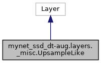

Inheritance diagram for mynet_ssd_dt-aug.layers._misc.UpsampleLike:

Collaboration diagram for mynet_ssd_dt-aug.layers._misc.UpsampleLike:

Public Member Functions | |
| def | call (self, inputs, kwargs) |
| def | compute_output_shape (self, input_shape) |
Detailed Description
Keras layer for upsampling a Tensor to be the same shape as another Tensor.
Member Function Documentation
◆ call()
| def mynet_ssd_dt-aug.layers._misc.UpsampleLike.call | ( | self, | |
| inputs, | |||
| kwargs | |||
| ) |
◆ compute_output_shape()
| def mynet_ssd_dt-aug.layers._misc.UpsampleLike.compute_output_shape | ( | self, | |
| input_shape | |||
| ) |
The documentation for this class was generated from the following file:
- /home/bgregorio/workspace/mynet_keras/mynet_ssd_dt-aug/layers/_misc.py